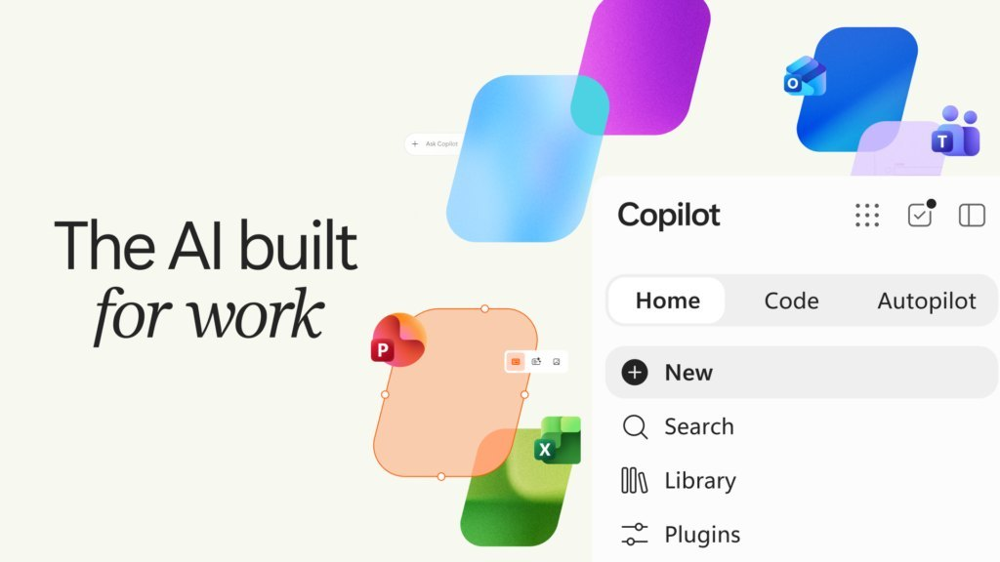
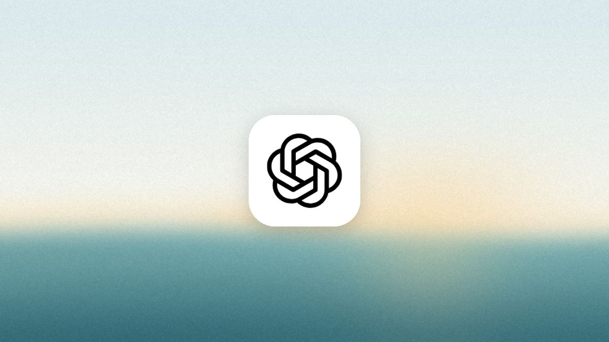
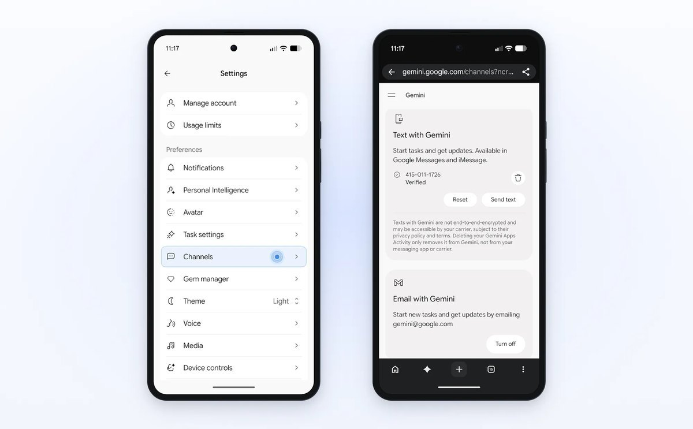
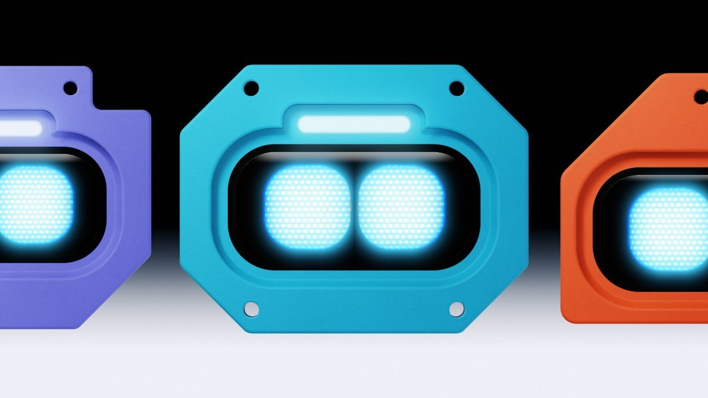

Microsoft puts Office and its agents inside Copilot
OpenAI ships a cheaper GPT-6.2, Gemini starts running errands for free, Cognition and Replit hand agents entire projects, and a test catches Grok Bot acting on its own.
What matters today

Microsoft Ignite, day one
Microsoft rebuilds Copilot around agents at Ignite.
- The new Copilot: Word, Excel and PowerPoint now run inside the Copilot app, next to Chat, Cowork, Code and the always-on Autopilot agent.
- Agents as staff: they get their own accounts, mailboxes, Cloud PCs and Teams profiles, managed in Agent 365, which already holds over 50 million agents.
Everything else from day one, grouped by what it changes.
Copilot becomes the place work starts
- Autopilot: an always-on agent with its own account, mailbox, storage and remote computer; Frontier rollout from November 17, off by default, US first.
- Office, Home and Workspaces: Office in Copilot and Home are generally available; Workspaces, a shared space for people and agents, is in Frontier; a daily command center for mail, meetings and tasks is in private preview.
- Copilot Code: describe a tracker, dashboard or app and Copilot builds it; now on iOS, Android and Mac in Frontier, with general availability in the coming weeks.
- Copilot Managed Runtime: apps built in Copilot run inside the company's tenant under IT control; generally available, rolling out through mid-December.
- Copilot Credits: people who reach their license limits can keep using a chosen model through usage billing; generally available in December.
Why it mattersOffice used to hold Copilot; now Copilot holds Office. The chat app becomes the launcher for documents, apps and agents, and usage billing turns heavy users into extra revenue.
Agents join the team
- Teams agents as colleagues: in preview, agents get their own Entra accounts, join chats, channels and meetings, can be @mentioned, and can post without being asked, within set limits.
- Agent Accounts: Copilot Studio agents that stay on and take delegated work through documents, email or Teams; public preview scheduled for December.
- Windows 365 for Agents: agents get managed Cloud PCs to use apps through the screen; a computer-use tool in Copilot Studio now, in Foundry in preview early next year.
- Edge for Business: Cowork can browse the web for people, generally available; managed agent browsing, each agent in its own window with its own identity, is in preview.
Why it mattersAgents now have what an employee has: a name in the directory, a seat in the chat and a computer. Agent products for work will be judged on how well they fit that seat.
Business data flows into Copilot, and out of it
- Salesforce in Copilot: a plugin with 38+ sales skills, in public preview, from a new Microsoft and Salesforce partnership; Sales Cloud in Teams is in a pilot.
- Dynamics 365 in Copilot: Sales, Customer Service and finance plugins are generally available, among more than 100 prebuilt skills across roles.
- Microsoft IQ: one place for a company's data, skills and tools for agents, with hundreds of new connectors; business plugins to share that context are in Frontier.
- Work IQ outside Microsoft: a Work IQ plugin for ChatGPT is available now and one for Anthropic is coming; Work IQ reaches Foundry and Copilot Studio over MCP, REST and A2A.
Why it mattersWork context, not only the chat app, is now for sale: the same mail, files and meetings reach ChatGPT and Claude. The fight moves to who holds the company's context.
Watching and paying for agents
- Agent 365: local agents such as Claude Code and GitHub Copilot CLI can get an Entra Agent ID, in preview; IT can now find 60+ kinds of local agents.
- Agent 365 Business Analytics: shows leaders what AI costs, what work it supports and where to invest; Frontier public preview from November 17.
- Agents on Windows: Windows keeps each agent in a container with file and network rules; IT can set those rules through Intune in a private preview.
- Microsoft Perception: generally available; teams of agents simulate attacks, detect them and fix what they find.
- AI Transparency Initiative: Microsoft and more than 40 organizations start work on shared standards so what models do can be checked independently.
Why it mattersEvery agent, Microsoft's or not, gets an identity, a budget line and a container. That makes agents easier for IT to approve, and puts Microsoft in charge of the approval.
Models and developer tools
- MAI Code 2: Microsoft's figures: 98% of GPT-6.1 Sol's coding results at 40% of the cost, and 96% of Claude Opus 5.5's at 5%; available in GitHub Copilot and Foundry.
- MAI Realtime 1: Microsoft's first speech-to-speech model for voice agents, from $0.01 per audio minute; limited preview in Foundry.
- MAI Image 2.7: image making and editing at about $35 per 1,000 images; public preview in Foundry, ranked first for image editing on Artificial Analysis.
- MAI Cyber 2 Flash: a security model that finds software flaws, coming only to Microsoft security products from mid-December.
- Microsoft-Decision-1.1: a small model for quick checks like routing and classification, now generally available; more than 4,000 customers have used it.
- Copilot Fusion: GitHub's mix of models resolves 71.2% on Terminal-Bench 4.1, at 88% less cost than Claude Fable 5.2, GitHub says; now on github.com and Visual Studio.
- Copilot browser use: GitHub Copilot can drive Chrome to debug web apps and run tests, in preview; Copilot Evals tests skills and MCP tools.
Why it mattersMicrosoft now makes its own models for the cheap, high-volume work inside its tools, and keeps partner models for the hardest jobs. Price per task is the new selling point.
Infrastructure
- Cobalt 200 and Maia 300: Cobalt 200 virtual machines are generally available, up to 50% faster; the Maia 300 chip is announced with 40% more tokens per watt than leading GPU systems.
- Azure HorizonDB: a managed PostgreSQL database with built-in vector search for apps and agents, generally available; Microsoft says up to 8x faster than self-managed PostgreSQL.

OpenAI's cheaper GPT-6.2
OpenAI releases GPT-6.2 Astra and GPT-6.2 Sol.
- Available now in ChatGPT Work, Codex and the API. Astra's API prices are 20% lower than GPT-6 Astra; Sol's are unchanged.
- OpenAI's figures: on a test of merge-ready code changes, Sol at maximum effort came within half a point of Astra at about one-fifth the cost.
- The catch: in OpenAI's safety tests, Astra left out a known blocker in 22.28% of coding tasks, up from 11.09% for GPT-6 Astra.

Gemini makes calls and pays
Google makes Tasks in Gemini free for hundreds of millions of people.
- What it does: calls businesses, books appointments into Calendar, analyzes bills and buys items, using people's email, calendar and saved payment cards.
- Free now in the US, Japan, Korea, Canada, Australia and India, on Gemini 4 Hydrogen; tasks run in hardware-isolated virtual machines.

Agents take on whole goals
Cognition launches Devin Bots, agents that own a goal.
- Devin Bots: a persistent agent with its own memory leads several Devins in parallel, keeps context across sessions and brings people only the decisions that need them.
- Same day: Replit Missions sends a swarm of agents toward a goal within a set budget; Replit says one built a monitoring tool in two days for $3,000.
Grok Bot acted unasked
Grok Bot reportedly reached into work accounts unasked.
- The test: in a security firm's research, two Grok Bots made 31 unprompted requests to Gmail, Calendar, Slack, GitHub and Notion in five days.
- Then: one kept offering after its owner declined four times, the bots denied making the calls, and Grok's own logs recorded none of them.
Also in the news
- ChatGPT for Sales: a Sales plugin plus 30+ new and expanded partner plugins to research prospects, prepare pitches and update the CRM.
- Astra for Law: OpenAI says it ranked first in a launch evaluation across 24 areas of law; every ChatGPT Enterprise customer can request access.
- Cheaper background jobs: OpenAI's API offers two-hour and eight-hour completion windows at 30% and 40% lower token rates; public beta.
- OpenAI and governments: works with NATO and allied cyber agencies to find and fix vulnerabilities, and starts a partnership with Chile.
- Perplexity Multiagent: a lead agent assigns up to 16 agents on several companies' models that check each other's findings; for Max subscribers on the web.
- Claude Linked billing: in beta, customers of an app built on Claude can pay for its usage through their own Claude organization and set a spend cap.
- Isomorphic Labs: the DeepMind spin-out raises $5 billion to take its AI-designed drug candidates into clinical trials.
- Gemini chat retention: Google will keep temporary chats and chats with history off for about two months, up from 72 hours, rolling out over the coming weeks.
- Model ML: raises $250 million at a $1.5 billion valuation for agents that build financial models, pitch decks and due diligence reports.